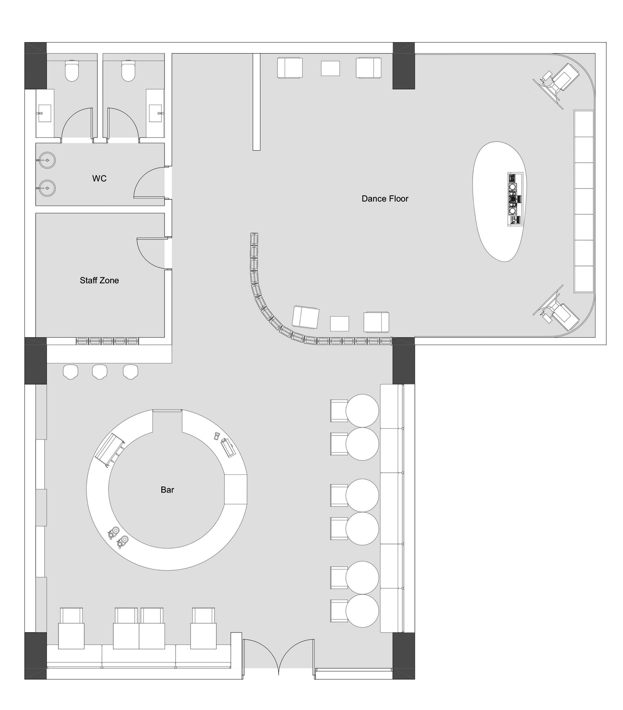
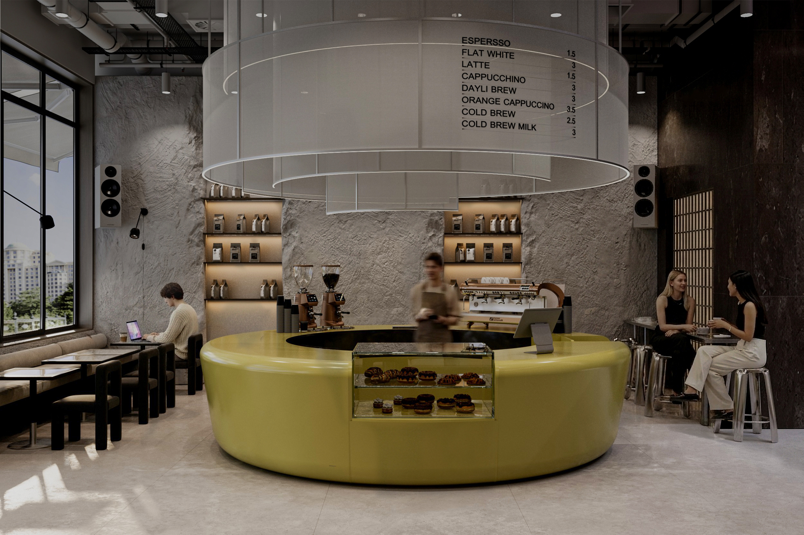
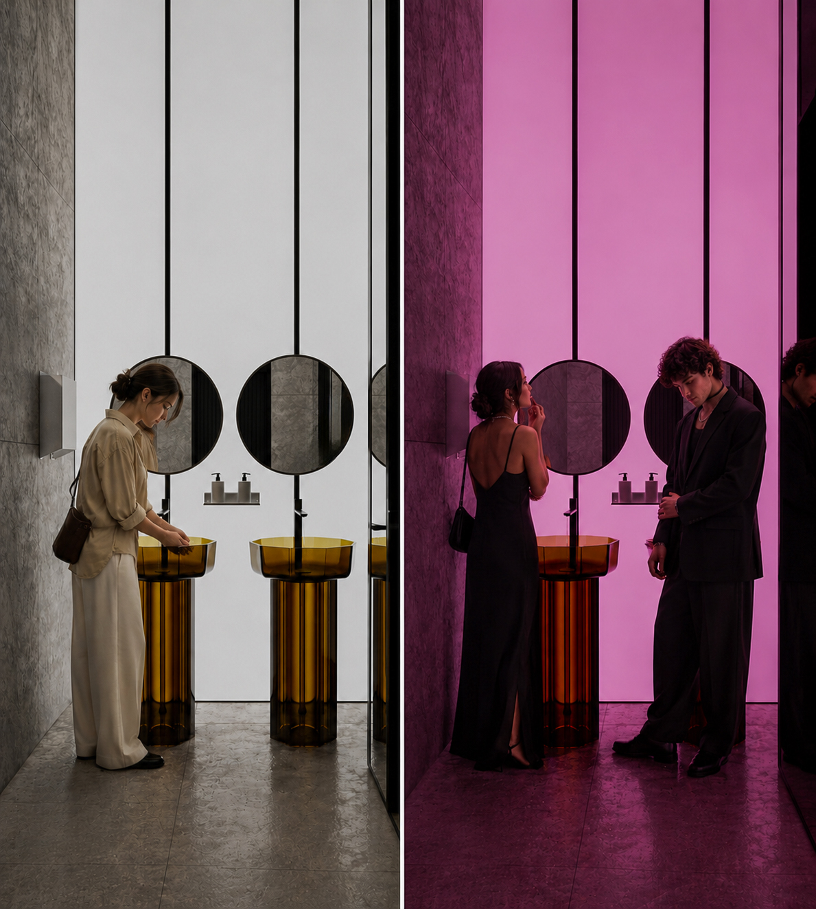
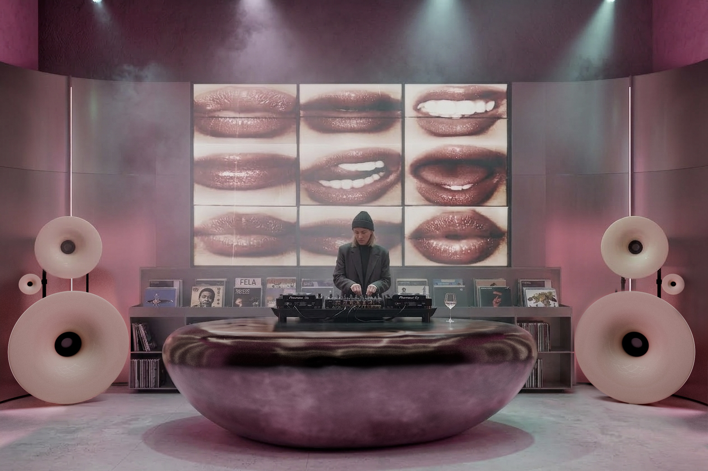
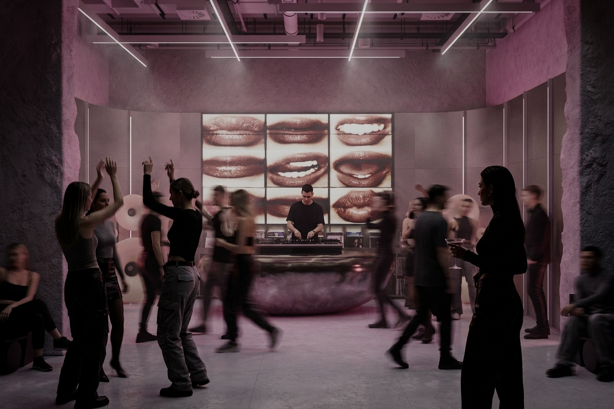
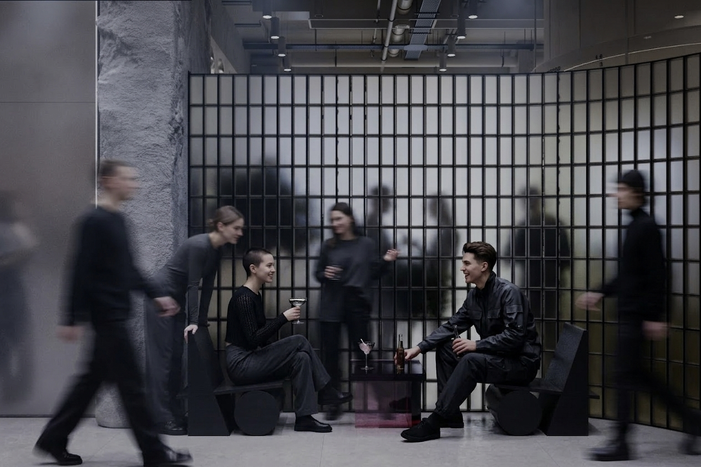

Day Cafe / Electronic Music Space
OmmO
- Year
- 2024
- Location
- Concept Project
- Scope
- Interior Concept / Layout / Visualization
OmmO is a hospitality concept designed around two distinct atmospheres. During the day, it functions as a calm café for work, meetings, and slow moments. After sunset, the space transforms into an electronic music venue with a bar, dance floor, and a more energetic social atmosphere.
Layout Plan





